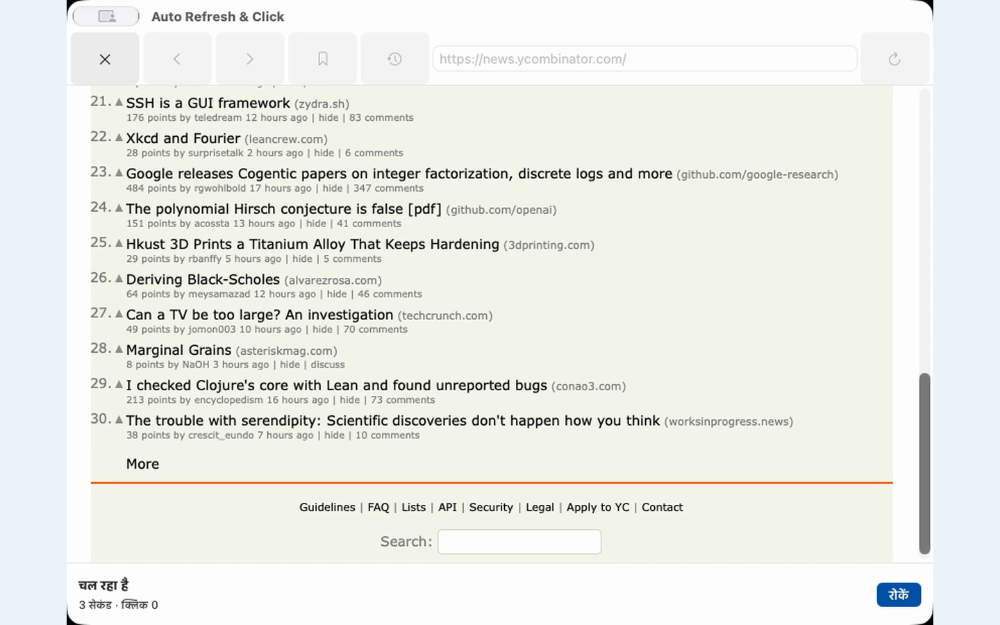

अपने आप रीफ़्रेश करें
डैशबोर्ड, स्टॉक और स्टेटस पेज अपडेट रखने के लिए पहले से तय समय चुनें या अपना अंतराल डालें।
अपने आप रीफ़्रेश सेट करेंबुकमार्क की गई ऑर्डर सूची खोलें, सहेजे गए चरण लोड करें और तय समय पर सूची का रीफ़्रेश बटन क्लिक करें। ऐप में या Safari एक्सटेंशन से काम करें।
एक पूरे वेब पते के लिए कई प्रक्रियाएँ अलग नामों से सहेजें। फिर वही पता खोलें, ज़रूरी चरण लोड करें, उनकी जाँच करें और शुरू करें। प्रक्रियाएँ उसी ऐप या ब्राउज़र में रहती हैं।
सेटअप गाइड पढ़ें
डैशबोर्ड, स्टॉक और स्टेटस पेज अपडेट रखने के लिए पहले से तय समय चुनें या अपना अंतराल डालें।
अपने आप रीफ़्रेश सेट करेंपेज पर बटन या लिंक चुनें या उसका नाम डालें। रीफ़्रेश के बाद चरण क्रम से चलते हैं। लक्ष्य अभी न मिले तो काम अगले रीफ़्रेश पर फिर कोशिश करता है।
रीफ़्रेश और क्लिक सेट करेंपूरा पेज दोबारा लोड किए बिना बार-बार क्लिक करें। आइकन वाला बटन भी चुन सकते हैं।
बार-बार क्लिक सेट करेंiPhone / iPad · Mac
ऐप इंस्टॉल करके खोलें। Safari की सेटिंग में एक्सटेंशन चालू करें और अपनी वेबसाइट की अनुमति दें।
मोड और अंतराल चुनें या हर चरण के बाद का इंतज़ार तय करें। क्लिक के लिए पेज से बटन या लिंक चुनें या उसका शीर्षक डालें।
काम शुरू करें और स्थिति व बाकी समय देखें। कभी भी रोकें या «बदलाव लागू करें» से सेटिंग अपडेट करें।
ऐप में बुकमार्क का नाम रखें या हाल का पेज फिर खोलें। इतिहास मिटाने तक इसी डिवाइस पर रहता है। आप उसे दर्ज करना रोक सकते हैं या साफ़ कर सकते हैं। बुकमार्क और सहेजी प्रक्रियाएँ बनी रहती हैं।
निजताiPhone, iPad या Mac के ऐप में, या Safari टैब में एक्सटेंशन से। डेस्कटॉप Chrome के लिए अलग एक्सटेंशन है।
अगर नाम का कोई हिस्सा बदलता है, तो * वाइल्डकार्ड इस्तेमाल करें। एक से ज़्यादा बटन मेल खाएँ, तो पैटर्न को अधिक सटीक बनाएँ।
इंस्टॉल किया हुआ ऐप एक बार खोलें और Safari की सेटिंग → एक्सटेंशन देखें। Safari 15.4 या नया संस्करण चाहिए। फिर भी न दिखे, तो सहायता से संपर्क करें।
Safari एक्सटेंशन में सेटिंग बदलकर «बदलाव लागू करें» चुनें। मौजूदा काम का सारांश देखें। काम खत्म करने के लिए «रोकें» चुनें।
कीमत और डिवाइस संगतता के लिए संबंधित स्टोर देखें।